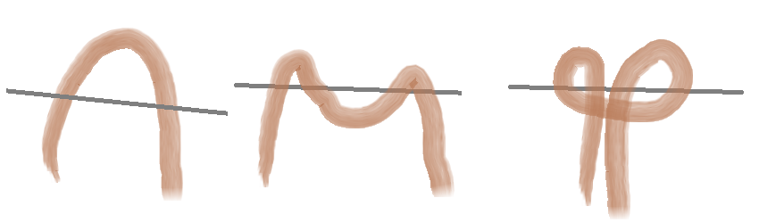

Ohjeita neulontaan
Tänne on koottu videoita parhaiten opettavilta sivuilta sekä yksinkertaiset ohjeet neulonnan alkuun.
Kirjoneule
Kun tavallinen sekä perinteisen resorin neulonta alkaa sujua helposti ja kaipaa uuden osaamista on vihdoin kuvioneulonnan aika.
Kuvioneulonta on paljon helpompaa kuin miltä se näyttää, ainoat haasteet luo liian kireät tai pitkät langanjuoksut.
Kuinka aloittaa?
Kirjoneulominen kannattaa tehdä ohjekuvion perusteella sillä alkajalle voi olla hankala laskea ja hahmoittaa kuviota ilman sopivaa kaaviota.
Kun sopiva kaavio on löytynyt, irjoneuleen teko on paras aloittaa sitten kun on työhön ensin neulonut sopivan verran resoria. Tämän jälkeen neulotaan ensin aloittavalla värillä, usein se on neuleen pohjaväri. Kun tulee aika lisätä uusi väri aloitetaan ensimmäinen silmukka samalla tavalla neuloen kun neuloisit pohjaväriä. Tätä tavallista neuletta voi jatkaa parin silmukan verran mutta sitten kannattaa tehdä langankierto eli kiertää pohjaväri kuviovärin langan yläpuolelta ja tarkistaa että lanka ei mene liian kireälle.
Liian löysän langan voi ommella jälkikäteen mutta liian kireä vetää neulosta ryttyyn eikä kuvio näytä oikealta.
Neuleen neulomista jatketaan yksinkertaisesti tätä kaavaa toistaen kuvio ohjeen mukaan kunnes väriä ei enää tarvitse. Sitten sen voi vaan tylysti leikata lyhyeksi ja päätellä, päättelyä ei tosin tarvitse tehdä heti mutta tällöin se on helpompaa.
Alla helppo ohjevideo
Resori
Helpoin ja yksinkertaisin resorin neulonta on yksi oikein, yksi väärin neulos. Tästä voi tehdä useita variaatioita sen mukaan kuinka tiukan resorin haluaa. Mitä isompi määrä silmukoita on, esim; ''kolme oikein, kolme väärin,'' sitä tiukempi siitä tulee.
Alla helppo ohjevideo
Neulomisen aloitus
Neulomisen aloitus alkaa luomalla aloitussilmukka. Olla ohjeistava kuva:

Tämä tapa tehdä aloitussilmukka luo kaksi silmukkaa, ja koska se harvoin on tarpeeksi täytyy nyt luoda uusia silmukoita. Helpoimpaan tapaan tehdä niitä on ohjeistus alla olevassa videossa.
Langan valinta
Langan valinta on yksi työn tärkeimpiä tehtäviä. Tässä tärkeimpiä muistisääntöjä langan valintaan:
- Valitse lanka käyttötarkoituksen mukaan. Jos teet työtä jonka kuuluu kestää kulutusta, ei pelkkä villaa sisältävä lanka ole tarpeeksi vahvaa.
- Mitä pienempää lankaa, sitä enemmän silmukoita työhön pitää tehdä.
- Katso langan vyötteestä langan valmistus erä ja osta sen mukaan saman sävyiset langat, eri erissä voi olla isojakin värieroja.
- Villa yksinään huovuttuu pesussa sekä käytössä ellei se ole superwash lankaa. Tämä selviää vyötteestä.
- Vauvoille sekä herkempi ihoisille tehdessä kannattaa olla erittäin tarkka lankavalinnoissa. Tavallinen villa on erittäin karkeaa ja kutittaa sekä raapii herkästi ihoa.
TAKAISIN ALKUUN